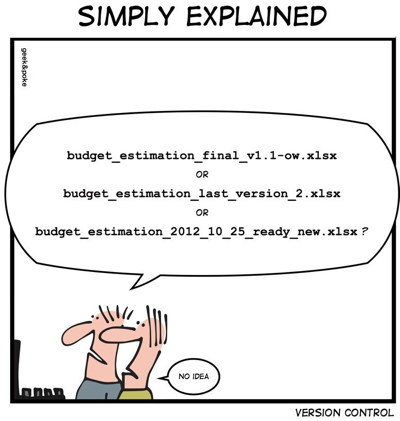
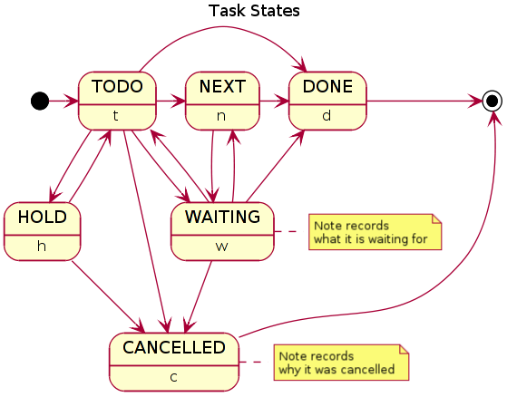

Org-mode
Samim Pezeshki
psamim@psam.im
Overview
- Org-mode basics
- As a todo manager and my workflow
- As an authoring tool and my workflow
Everyone has a notebook
Why text files?
Evolution
- Windows
- Android
- UNIX Way
Truly portable
Time proof
grep and others
Version Control
Own your notes
Sync
UNIX Philosophy
Your Editor of choice

Now . . . Org-mode
What is org-mode?
Emacs mode
Simple TODO list manager
Project Planner
Note taking, Authoring Tool
Based in outlines
History
- Started in 2003
- Integrated into Emacs
Basics
Stars and headlines
Styling
Bold, italic, strike-through
Visibility Cycling using TAB
Move headlines
Lists, ordered and un-ordered
Check-boxes (Nested)
Links
Org Menu
Encryption
Authoring
Table Editor and Spreadsheets
Comments
Code Blocks
Export System
ODT, PDF, LaTeX, ASCII
HTML with MathJax
As a Static Site Generator
Beamer
Reveal
Parsers
Github Support
Other Packages
Ultimate Todo Manager
Meta-data and properties
Tags, inheritance
Priorities
Efforts
Scheduling and Time Planning
Habits
Status Flag
Clocking
Time Tables
Sparse Trees and queries
Agenda Views
Archiving and Refiling
Org-pomodoro
Links
- to EVERYTHING
- remember.el and templates
GTD
- Collect
- Process
- Organize
- Review
- Do
Ultimate Authoring
Embedded Latex and Previews
Preview Images
Tables and Calc
Spell Checking
Autocompletion
Minted and htmlize.el
Latex classes
Full Editor on Code Blocks

Babel

Emacs LaTeX Tools
RefTex, CDLatex
Bibloiography and References
Biblatex using Zotero
Plantuml, Graphviz, Ditaa
Reproducible Research
- iPyhthon
- Mathematica
- Knitr